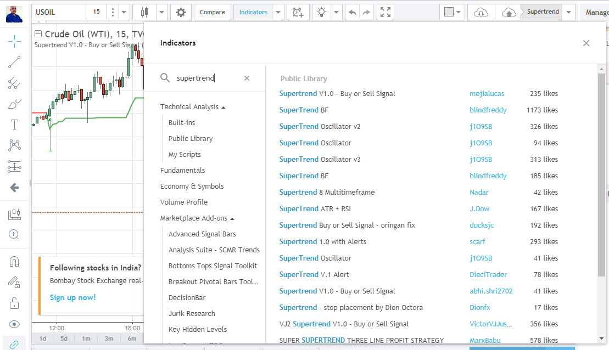
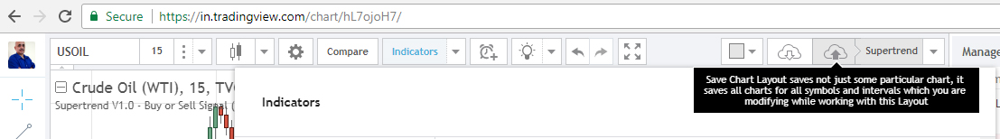
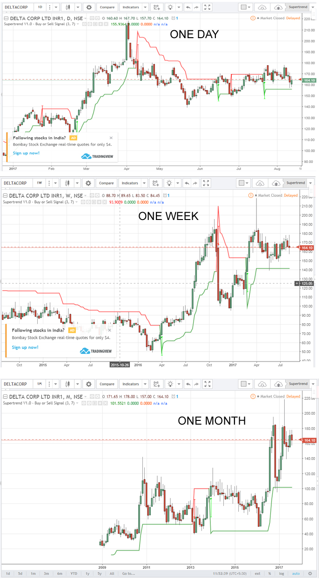

This article will coach you how to set up technical charts for the Indian stock and commodity markets and plot one solid super indicator that generates buy and sell signals with near-accuracy.
Step 1:
Go to TradingView.com site and register for free.
Open the Charts link.
Open a stock or commodity chart (I chose Crude WTI)
Step 2:

Click on the “Indicators” button.
Search for “SuperTrend.”
Select the “SuperTrend V1.0 – Buy or Sell Signal.”
I have researched this signal, but not the others. This is a pretty accurate signal and you can work with it. I’ll keep updating as and when I get the time to research other signals.
Step 3:
It’s now time to tweak the indicator (or you can leave it as it is)
Supertrend employs the Average True Range and a multiple factor to predict trends. You don’t have to bother about the formula behind the tool.
By default, Supertrend is set to 3, 7 (multiple factor, ATR). Just click the gear icon that is next to the indicator’s title on the chart, and change it to 3, 10 for better results – you can skip this step if you like.
Step 4:
Save the Chart by clicking on the Cloud-Download Arrow icon.

Step 5: Interpretation of Data
The supertrend is represented by a line that turns red or green based on the price-volume formula inbuilt into the code.
When the line goes over the price of the stock, it turns red, and this is a SELL signal.
When the Supertrend line falls below the price, it turns green and this is a BUY signal.
That’s all there is to it.
HOWEVER, here is how you should use the Supertrend indicator for Day Trading and Investing.
DAY TRADING WITH THE SUPERTREND INDICATOR
Study the chart above.
It is set to a 15 Minute timeline. This is important if you are a trader because this timeline gives you multiple opportunities to buy and sell in a day. You get many opportunities to make money if you play it right.
If you do not trade more than once or twice in a day, you can set a longer timespan, say 30 minutes or 1 hour.
OR shorter than 10 minutes if you are a super trader.
Now, check the signals Supertrend generated:
Sell signal at 49.87 on 10 August 2017 at around 7.15 PM
Buy Signal at 48.32 on 11 August 2017 at 4.45 PM
Crude spiked to 48.95 yesterday before closing at 48.75.
By these signals, Supertrend gave you an opportunity to make money twice within 24 hours. Both calls generated profits.
GENERATING INVESTMENT CALLS WITH THE SUPERTREND INDICATOR
This is for stock pickers who want to time their entry.
They must validate a stock’s uptrend or downtrend using 3 time periods – 1 day, 1 week, and 1 month.
Check the graphic below, I have taken DELTA CORP as an example. All the charts suggest a BUY.

SUMMING UP
Well, this is how you use the Supertrend indicator to learn buy and sell signals.
The only hassle is that the data is delayed by a few minutes in the free plan, but even the delayed indication can help day traders gain. Investors on the other hand should not bother about delayed ticks.
That’s all there is to it. Try it out in mock trading sessions and fine tune your strategies before trading for real.
Good luck.
THANKS SIR GREAT SITE AND GOOD RECO. WILLL TRY AND REPORT.